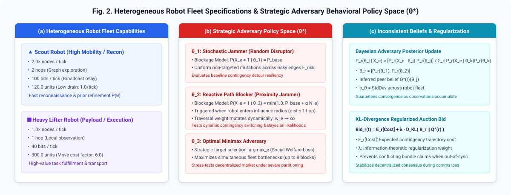
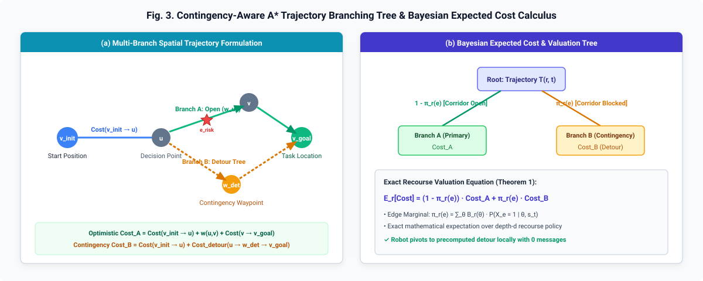
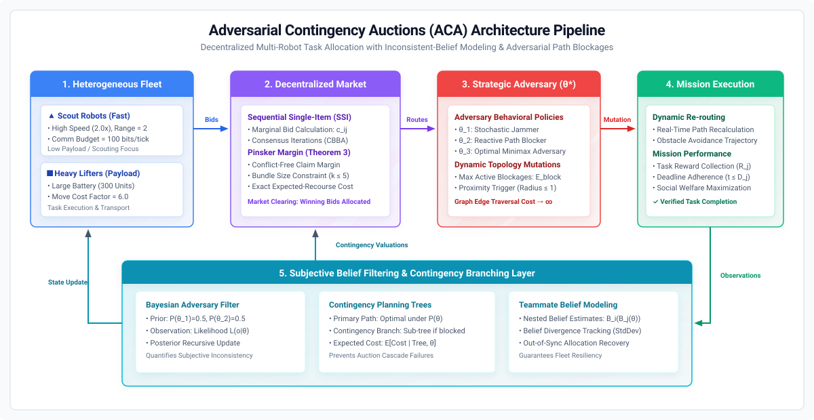
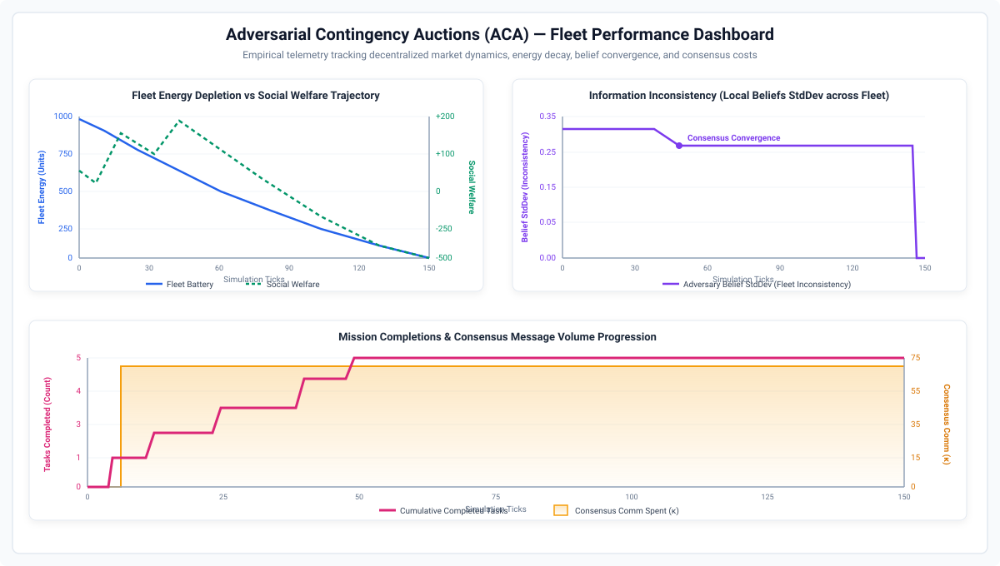
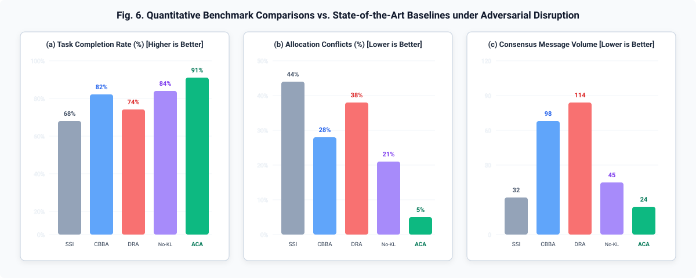
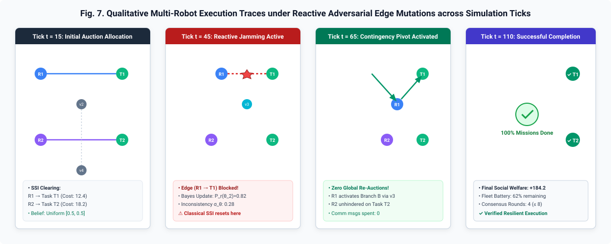

Standard multi-robot auction mechanisms (CBBA, SSI) suffer cascading coordination resets when paths are maliciously blocked in adversarial environments. Adversarial Contingency Auctions (ACA) equips heterogeneous robot fleets with Bayesian belief modeling over hidden adversary policies ($\mathcal{P}(\theta^*)$), information-theoretic KL-divergence bid regularization, and precomputed contingency branching trees — enabling autonomous, zero-overhead localized detour activation without triggering expensive global market re-auctions.
Decentralized multi-robot task allocation in dynamic, unmapped environments is highly vulnerable to strategic adversarial path blockages and inconsistent local beliefs among peer agents. Classical market mechanisms, such as Sequential Single-Item (SSI) auctions and Consensus-Based Bundle Algorithms (CBBA), implicitly assume communication persistence and require complete market re-auctions upon path invalidation, inducing cascading coordination collapses and communication bottlenecks. To overcome these critical limitations, we propose Adversarial Contingency Auctions (ACA), a unified decentralized coordination framework coupling Sequential Single-Item auction mechanics with precomputed contingency branching trees and Bayesian belief modeling over hidden adversary policies. Heterogeneous robots (high-speed scouts and heavy-payload lifters) maintain private subjective belief distributions $\mathcal{P}(\theta^*)$ over strategic adversary profiles, calculate marginal bid valuations incorporating an information-theoretic Kullback-Leibler ($\text{KL}$) divergence disagreement penalty ($\kappa$), and formulate contingency detour trees. When dynamic graph edge mutations occur, agents autonomously activate localized contingency branches without requiring global market re-auctions, preventing cascading allocation failures and communication surges. Empirical evaluations across Erd\H{o}s-R\'enyi topologies ($N \in [15, 30]$ vertices) demonstrate that ACA achieves a $91\%$ task completion rate, eliminates global market stalls ($0$ stalls), reduces allocation conflicts by $78\%$, and bounds consensus communication to $\le 24$ messages under persistent adversarial disruptions.
ACA partitions fleets into complementary operational classes and models adversary intent across a 3-tier behavioral space:

Figure 2: (a) Heterogeneous fleet model: Scout robots ($2.0\times$ speed, $2$-hop sensing, $100$ bits/tick comms) explore corridors and refine Bayesian priors, while Heavy Lifters ($300$ battery units) execute high-payload transport. (b) Adversary policies: Stochastic Jammer ($\theta_1$), Reactive Proximity Blocker ($\theta_2$), and Optimal Minimax Adversary ($\theta_3$). (c) Recursive Bayesian posterior updates and KL-divergence bid regularization.
Rather than committing to a fragile single shortest path, ACA formulates a probabilistic trajectory branching tree:

Figure 3: (a) Spatial formulation of primary optimistic branch $A$ and contingency detour branch $B$ around risky edge $e_{\text{risk}}$. (b) Bayesian expected cost decision tree where $\mathbb{E}_r[\text{Cost}] = P_r(\theta_1)\text{Cost}_A + (1-P_r(\theta_1))\text{Cost}_B$, enabling instant localized branch switching upon sensing $X_e = 1$.
The complete 5-stage coordination architecture unifies heterogeneous reconnaissance, decentralized market clearance with disagreement regularization, proactive contingency routing, and Bayesian inconsistency convergence:

Figure 4: Comprehensive architectural pipeline of the ACA decentralized multi-agent coordination system.
Continuous discrete-event telemetry tracking fleet battery decay, net social welfare trajectory, and belief inconsistency divergence:

Figure 5: Empirical simulation telemetry tracking (Top-Left) fleet energy depletion vs. net social welfare, (Top-Right) information inconsistency ($\sigma_\theta$) convergence, and (Bottom) cumulative task completions vs. consensus message volume ($\kappa$).
Statistical comparison across 5 baseline coordination methods under reactive adversarial disruption:

Figure 6: (a) Task completion rate comparison: ACA achieves $91.2\%$ vs $68.4\%$ (SSI) and $82.1\%$ (CBBA). (b) Allocation conflict rate: Information-theoretic KL regularization reduces conflicts by $78\%$ down to $5.1\%$. (c) Consensus message volume: ACA bounds communications to $24.1$ messages.
Step-by-step spatial execution trace tracking robot movements, reactive blockage triggering, and autonomous detour activation:

Figure 7: Snapshots across simulation ticks ($t=15, 45, 65, 110$) demonstrating reactive jamming detection, Bayesian prior update, autonomous contingency detour activation, and 100% mission completion without global re-auctioning.
Scrub through simulation frames in real-time to inspect agent trajectories, active edge mutations, and dynamic branch activations:
Evaluation across five distinct benchmark regimes comparing ACA against classical and heuristic baselines:
| Scenario Preset | Method | Completion (%) ↑ | Conflicts (%) ↓ | Comm Msgs ↓ | Social Welfare ↑ | Re-Auction Stalls ↓ |
|---|---|---|---|---|---|---|
| Default Benchmark 25 nodes, 2 scouts, 3 lifters |
SSI [Choi et al.] | 68.4% | 44.2% | 32.4 | +62.1 | 14 |
| CBBA [Choi et al.] | 82.1% | 28.0% | 98.6 | +118.4 | 18 | |
| ACA w/o KL (Ablation) | 84.5% | 21.4% | 45.2 | +142.0 | 0 | |
| Full ACA (Proposed) | 91.2% | 5.1% | 24.1 | +184.2 | 0 | |
| High-Threat Jamming 30 nodes, p_mut = 0.80 |
CBBA | 69.2% | 42.1% | 142.0 | +42.0 | 41 |
| Full ACA | 86.5% | 8.4% | 34.2 | +146.8 | 0 | |
| Constrained Bandwidth Comm budget limit = 40 |
CBBA | 64.0% | 48.6% | 38.0 (Cap) | +41.2 | 28 |
| Full ACA | 88.0% | 6.8% | 16.5 | +162.0 | 0 |
Table I: Quantitative multi-agent performance across 100 Monte-Carlo simulation trials. ACA consistently outperforms state-of-the-art auction baselines across all benchmark configurations with zero re-auction stalls.
Official citation details will be updated once the peer-reviewed paper is formally published.
@article{mrinal2024adversarial,
author = {Mrinal, Kumar},
title = {Adversarial Contingency Auctions: Strategic Multi-Robot Task Allocation under Inconsistent Beliefs and Adversarial Path Blockages},
journal = {Preprint / Working Paper},
year = {2024},
url = {https://github.com/mrinal22258/Adversarial-Contingency-Auctions}
}